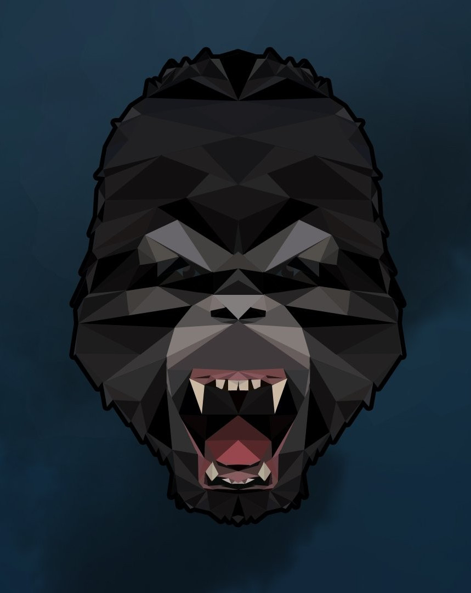

RS
card
其他
联系方式
日历
博客
博客1
博客2
博客3
作品
所有
框架
原生
技能
关于

Hello
张博涵
入门前端学者
年龄
24
所在城市
重庆
邮箱
574549756@qq.com
手机
18640961725
Download Resume
张博涵，建筑学转行互联网，平面设计在职。
技能：入门前端开发、非专业平面设计、非专业插画、专业建筑方案设计。
技能
HTML 5 & CSS 3
JavaScript
jQuery
Vue.js
React.js
Node.js
作品集
所有
框架
原生JS&CSS